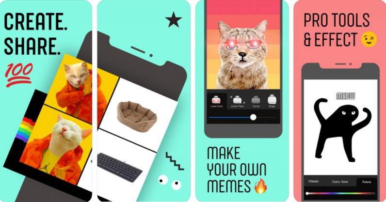

ทุกวันนี้เวลาที่เราเลื่อนฟีดในเฟซบุ๊กก็มักจะพบกับมีมต่าง ๆ มากมาย ที่เป็นกระแสกันอยู่ในตอนนี้ แต่ล่าสุดเมื่ออาทิตย์ที่แล้ว Facebook แอบปล่อยแอปที่สามารถสร้างมีมได้ง่าย ๆ เพียงไม่กี่ขั้นตอน
แอป Whale ถูกพัฒนาขึ้นโดยทีมทดสอบผลิตภัณฑ์ใหม่ NPE ของ Facebook จะมีความสามารถในการแต่งภาพแบบง่าย ๆ ที่มีจุดประสงค์สำหรับการสร้างมีมโดยเฉพาะ
ในแอปผู้ใช้จะสามารถใช้ภาพทั้งที่ถ่ายขึ้นมาใหม่เอง หรือจะใช้ภาพจากภาพที่ตัวแอปมีให้ก็ได้
หลังจากทำมีมเสร็จเรียบร้อยแล้ว ผู้ใช้จะสามารถแชร์ไปยังแอปต่าง ๆ ได้โดยทันที
โดยแอป Whale นี้ ในตอนนี้ยังมีให้ดาวน์โหลดแค่ใน App Store ของประเทศแคนาดาเท่านั้น